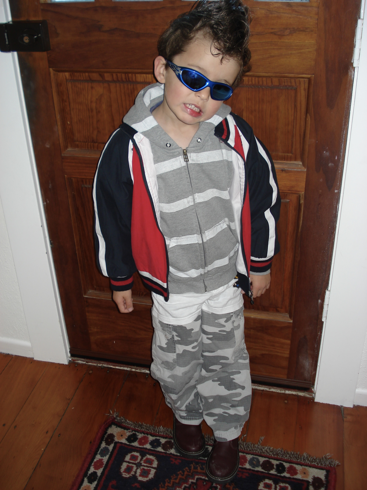

The idea was good — but halfway through, it didn't come out the way it was supposed to. I still wore it anyway.
Fashion and clothing had always been a big part of my life — there was always a sewing machine within arm's reach. My mum used to run her own label, gave it a go in the UK, then brought it back to New Zealand, slowed down and kept production local. Growing up around that probably shaped how I think about making things.
Later on, when I started getting into fashion more myself, I'd find myself picturing an outfit — a silhouette, a specific shape — and then spend hours searching through clothing and vintage stores trying to find it. It usually ended in a "close enough" moment: spending too much money and time on something that wasn't quite right, then going back to looking again a few months later. It felt like I was wearing someone else's vision, not my own.
I like to be able to feel the quality of things with my hands — heavy leather, raw selvedge denim, steel, that sort of stuff. I wanted clothing that felt like it was made to last a lifetime. All this fast fashion, cheap material, cheap labour stuff never sat with me.
I graduated high school in 2020 — the first year of COVID, when everything was online and it didn't really matter whether you showed up or not. I didn't like who that made me. So I picked something to hold myself accountable to: learning Japanese, on my own, in my bedroom.
I got so deep into it that my parents sat me down. They asked why they never saw me anymore, what I was doing in my room, why I was doing this to myself. I'd never really been vulnerable in front of them before — but I'd also never felt that strongly about anything, and I ended up breaking down trying to explain it. After that, they let me keep going. A year and a half later, I passed N1 with a near-perfect score.
That same drive is how I approach making clothes. If I can't find what I'm picturing, I make it myself — properly, with materials and construction that earn the word "lifetime." That's the only way I know how to do this.
